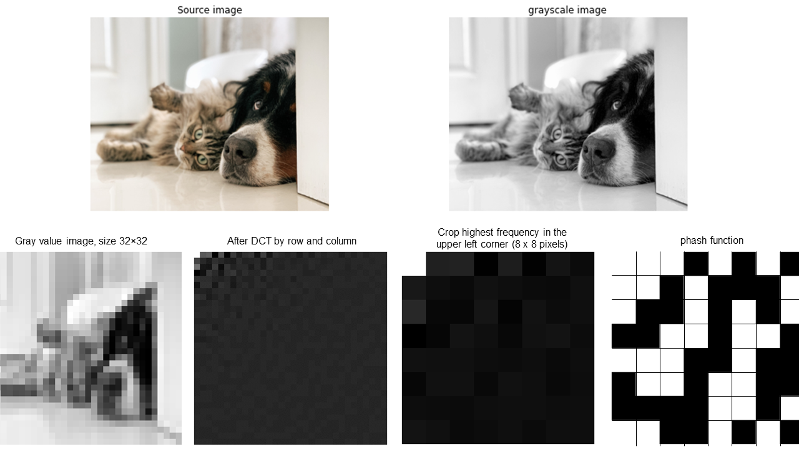
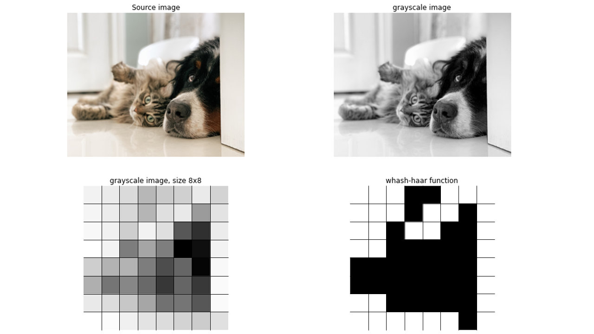

Average hash
After the decolorizing and scaling step, each pixel block is compared to the average (as the name suggests) of all pixel values of the image. In the example below, we will generate a 64-bit hash, which means that the image is scaled to 8×8 pixels. If the value in the pixel block is larger than the average, it gets value 1 (white) and otherwise a 0 (black). The final image hash is followed by flattening the array into a vector.
|

Perceptual hash
After the first step of decolorizing, a Discrete Cosine Transform (DCT) is applied; first per row and afterward per column. The pixels with high frequencies are cropped to 8 x 8 pixels. Each pixel block is then compared to the median of all gray values of the image. If the value in the pixel block is larger than the median, it gets value 1 and otherwise a 0. The final image hash is followed by flattening the array into a vector.
 |
Differential hash
After the first step of decolorizing and scaling, the pixels are serially (from left to right per row) compared to their neighbor to the right. If the byte at position x is less than the byte at position (x+1), it gets value 1 and otherwise a 0. The final image hash is followed by flattening the array into a vector.
|

Haar wavelet hash
After the first step of decolorizing and scaling, a two-dimensional wavelet transform is applied to the image. Each pixel block is then compared to the median of all gray values of the image. If the value in the pixel block is larger than the median, it gets value 1 and otherwise a 0. The final image hash is followed by flattening the array into a vector.
 |
Create the images
All examples are created using the underneath code:
# pip install imagesc
import cv2
from scipy.spatial import distance
import numpy as np
import matplotlib.pyplot as plt
from imagesc import imagesc
from undouble import Undouble
methods = ['ahash', 'dhash', 'whash-haar']
for method in methods:
# Average Hash
model = Undouble(method=method, hash_size=8)
# Import example data
targetdir = model.import_example(data='cat_and_dog')
# Grayscaling and scaling
model.import_data(targetdir)
# Compute image for only the first image.
hashs = model.compute_imghash(model.results['img'][0], to_array=True)
# Compute the image-hash
print(method + ' Hash:')
image_hash = ''.join(hashs[0].astype(int).astype(str).ravel())
print(image_hash)
# Import image for plotting purposes
img_g = cv2.imread(model.results['pathnames'][0], cv2.IMREAD_GRAYSCALE)
img_r = cv2.resize(img_g, (8, 8), interpolation=cv2.INTER_AREA)
# Make the figure
fig, ax = plt.subplots(2, 2, figsize=(15, 10))
ax[0][0].imshow(model.results['img'][0][..., ::-1])
ax[0][0].axis('off')
ax[0][0].set_title('Source image')
ax[0][1].imshow(img_g, cmap='gray')
ax[0][1].axis('off')
ax[0][1].set_title('grayscale image')
ax[1][0].imshow(img_r, cmap='gray')
ax[1][0].axis('off')
ax[1][0].set_title('grayscale image, size %.0dx%.0d' %(8, 8))
ax[1][1].imshow(hashs[0], cmap='gray')
ax[1][1].axis('off')
ax[1][1].set_title(method + ' function')
# Compute image hash for the 10 images.
hashs = model.compute_imghash(model, to_array=False)
# Compute number of differences across all images.
adjmat = np.zeros((hashs.shape[0], hashs.shape[0]))
for i, h1 in enumerate(hashs):
for j, h2 in enumerate(hashs):
adjmat[i, j] = np.sum(h1!=h2)
# Compute the average image-hash difference.
diff = np.mean(adjmat[np.triu_indices(adjmat.shape[0], k=1)])
print('[%s] Average difference: %.2f' %(method, diff))
# Make a heatmap to demonstrate the differences between the image-hashes
imagesc.plot(hashs, cmap='gray', col_labels='', row_labels=model.results['filenames'], cbar=False, title=method + '\nAverage difference: %.3f' %(diff), annot=True)